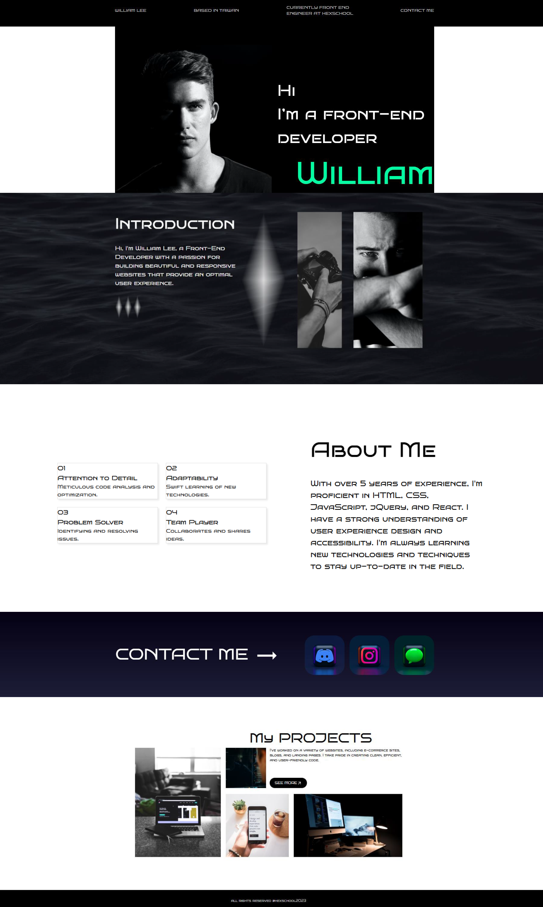
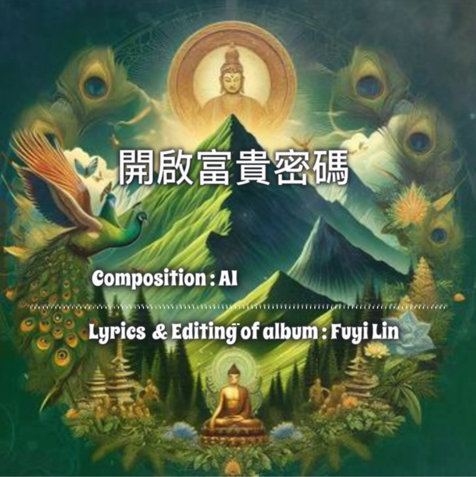
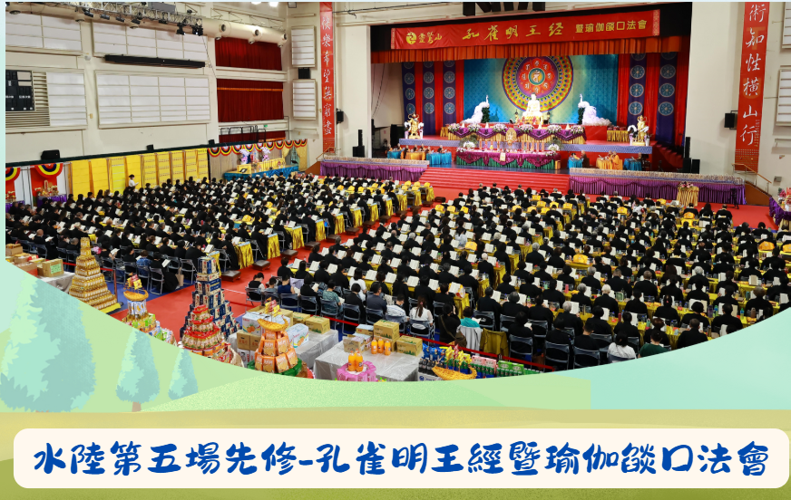
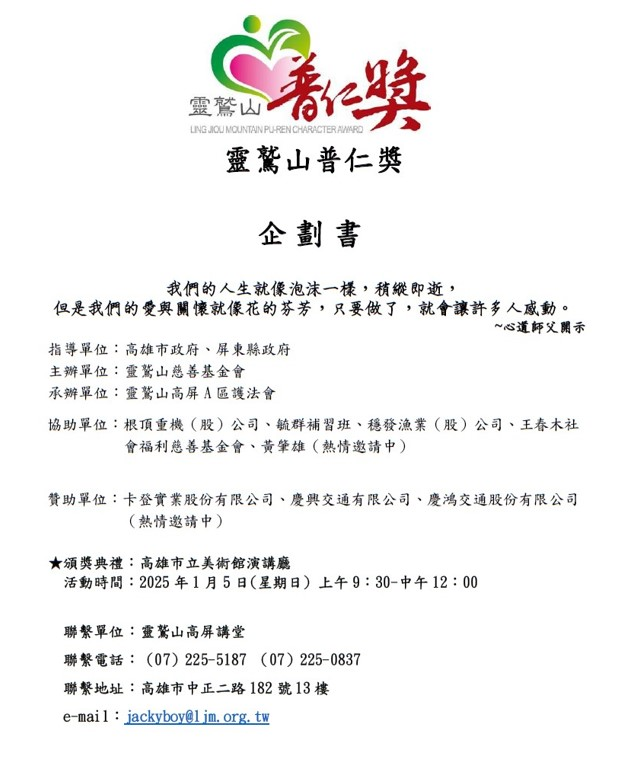
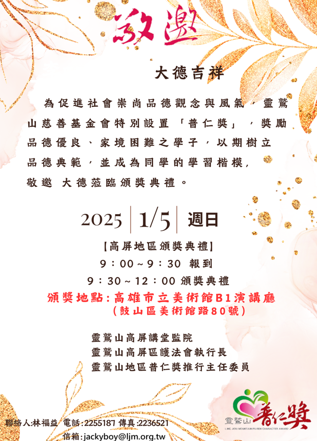

作品集
切版技術打造靈活、高效的網頁解決方案 01
💡背景問題：
在使用 WordPress 建站時，發現現成主題與外掛的局限性，例如： 無法完全客製化設計，難以打造個性化的履歷與作品展示頁面。 外掛過多影響網站加載速度，降低 SEO 排名並削弱使用者體驗。
🔍解決方案：
- ●結構規劃： 運用 HTML 和 CSS 建立語義化網頁結構，提升 SEO 效益，並確保跨平台兼容性。
- ●樣式最佳化： 採用 Flexbox 與 Bootstrap，打造響應式設計（RWD），兼容多種裝置屏幕。
- ●互動設計： 運用CSS動畫（Transitions/Keyframes）提升使用者互動體驗。
- 模組化設計： 建立可重複使用的 CSS 樣式與 HTML 元件（按鈕、卡片），提升設計效率與一致性。
- ● 線上預覽： 將最終成果部署至 GitHub Pages，供即時瀏覽與反饋。
- 1.成功切版並部署專屬履歷作品集網頁，提供即時瀏覽與反饋。
- 2.提升版面設計專業，從語義化結構到RWD設計，優化使用者體驗。
-從零開始學習網頁開發技術-靈活設計專屬的個人履歷與作品集頁面
🎯成果亮點：

突破傳統 : AI技術打造法會主題曲 02
💡背景問題：
傳統法會推廣形式難以引起年輕人共鳴與傳播，如何透過創新方式 傳遞法會主題與佛教觀念成為挑戰。
🔍解決方案：
- (1) 將法會主題及佛教理念轉化為現代化的歌詞，利用AI技術快速編曲， 突破傳統音樂創作的時間與成本限制。
- (2)透過社群媒體（如FB、LINE、YouTube）進行推廣，並在實體聚會中播放， 增強參與者對活動的印象與情感連結。
- (3)以創新打破傳統，提升互動與共鳴，並促使更多人參與報名活動。
✔️使用技術：
- ChatGPT：歌詞修飾 || Sono Ai: 編曲生成音樂
- Microsoft Designer: 主題圖片生成 || Runway : 圖片動畫
- Tuneform : 頻譜效果 || CapCut: 影片剪輯
- Photopea : 線上修圖
🎯成果亮點：
- (1)創作專屬主題曲，將法會理念融入現代音樂風格，吸引年輕人共鳴。
- (2)在社群平台上發布作品，獲得高互動與分享，擴大活動影響力。
- (3)每場實體聚會播放歌曲，營造共鳴連結，增強活動印象與參與意願。
※點擊進入影片連結


髮型 x 精油雙服務：LOGO設計優化與數位推廣優化 03
💡背景問題：
舊式招牌全以文字呈現且沒有精油服務的主題，無法完整傳遞店家服務內容與明顯的特色形象給客戶原招牌設計， 過於單調以純文字為主，缺乏視覺吸引力，且未能有效傳達店家獨特的『髮型設計』與『精油服務』兩大核心特色， 導致品牌形象模糊，無法吸引新客群。
🔍解決方案：
- ●設計概念： 結合剪刀、髮梳、薰衣草視覺元素，象徵剪出亮麗人生。
- ●色彩運用： 選用溫暖的紫色與橙色，展現專業質感與親和力。
- ●設計工具： 使用 Illustrator和Photoshop 完成高解析度LOGO設計。
- ●將新LOGO設置為店家LINE群組大頭照，強化視覺辨識度。
- ●更新Google地圖商家資訊，確保品牌形象一致，吸引更多線上顧客。
- ●LINE群中發布LOGO理念與品牌故事，強調「精油護髮」雙重價值。
- ●分享客戶見證與設計過程，促進客戶對品牌的情感連結。
(1)優化LOGO設計：
(2)數位品牌推廣:
(3)品牌故事行銷:
※實體招牌規劃施工中

🎯預期成果：
- 新LOGO設計提升品牌識別度，吸引鄰近新顧客到店詢問。
- LINE群組的品牌大頭照更換後，群組互動率頻繁，增加顧客回訪與諮詢
- 透過LOGO故事行銷，成功吸引客戶對品牌服務認同，提升滿意度。
(1)視覺形象提升：
(2)線上曝光增加：
(3)增加品牌影響:
獎學金企劃與邀請：讓愛延續獎 對外連結共創價值 04
💡背景問題：
早期獎學金推廣主要依賴DM於LINE群組及實體管道傳播，形式單一且難以完整傳遞活動價值與回饋機制。 隨著企業及政府部門的合作機會增加，需一份專業、清晰且具說服力的活動資料 ，以快速促成雙方合作共識。
🔍解決方案：
- ●內容提煉： 依創辦人影片.官網資訊，精煉獎學金理念、核心價值及目標，設計結構清晰的企劃書。
- ●回饋機制： 規劃贊助方回饋方案，明確呈現合作夥伴可獲得的品牌曝光與社會責任價值。
- ●成果展示： 整合歷屆活動照片、受獎者故事及表揚成效，提升企劃書的說服力與情感連結。
- ●設計精美邀請卡，清晰傳遞活動資訊，提升活動專業度與受邀貴賓印象。
- ●提供電子與實體雙版本，確保迅速傳遞資訊並體現邀約誠意。
- ●使用線上工具，Fliphtml產生企劃書與Canva製作邀請卡，同步應用於LINE群組、 電子郵件與紙本多元進行，提升活動曝光度與合作洽談效率。
1.企劃書製作:
2.邀請卡設計：
3.多管道推廣：
🎯成果亮點：
- 完整的企劃書與邀請卡助力合作方快速理解活動核心理念及回饋機制，成功縮短洽談流程， 增加企業與政府單位合作意願。
- 企劃書與頒獎成果整合，展現專業形象，提升活動計畫公信力與品牌影響力。
- 精美邀請卡搭配數位化推廣（LINE群組、email)，出席率提升20%，合作機會與關注度同步增長。
1.提升合作效率：
2.品牌形象升級：
3.邀約與關注度提升：
※點擊畫面可進入全螢幕觀看內容※
 